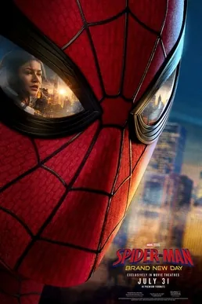

The genetics
Genetics enters through mutation. Parker's powers first came from a radioactive spider bite, but the change that drives this film is framed in genetic terms: his AI assistant finds that emotional trauma has accelerated mutations in his "arachnid DNA", producing organic webbing from wrist spinnerets and instincts he cannot control. The remedy is molecular too: Bruce Banner's inhibitor uses siRNA to keep the Hulk at bay, and he tells Parker the technology could suppress mutating DNA, but warns that a universal inhibitor able to act on any mutation would be dangerous. Parker builds both, and the universal one lets the Department of Damage Control hold the mutant telepath Jean Grey while its director, Bill Metzger, experiments to replicate her powers, as he did with her sister, who died in custody. Parker and Banner are sympathetic; Metzger's institution is the villain. The film treats the inhibitor as a metaphor for suppressing grief and ends with Parker taking it off. Real siRNA drugs do reduce the activity of specific genes, but nothing like a wearable switch for superpowers exists.
How genetics is portrayed
- Overall portrayal of genetics
- mixed Parker and Banner are heroic users of the mutation-suppressing technology, while DODC co-opts Parker's universal inhibitor to imprison and experiment on mutants, and Banner's warning that such a device is dangerous comes true. The film ends by rejecting suppression and having Parker accept his mutated DNA, which is sympathetic to the mutation rather than hostile to the science; the institutional misuse is the main harm, so neither side dominates.
- Outcome of the genetic intervention
- mixed The siRNA inhibitors work as intended: Banner stays human and Parker regains control of his mutated body. But the universal inhibitor lets DODC hold Jean while it experiments on her, removing Banner's inhibitor unleashes a stronger Hulk, and in the end Parker removes his own inhibitor to win, so the suppression technology both helps and harms.
- Peter Parker / Spider-Man
- hero Aim: personal, benevolent (positive). After his arachnid DNA mutates and he brutally beats Gargan, injuring a police officer, Parker builds an inhibitor to suppress his mutating DNA so that he hurts no one, and with MJ a universal inhibitor that he uses to stop Jean Grey. He is the sympathetic protagonist, though the film shows his universal inhibitor ending up in DODC's hands, and at the climax he takes his own inhibitor off and accepts his changed body.
- Bruce Banner
- hero Aim: personal, benevolent (positive). Banner, an ESU professor, wears his own siRNA inhibitor to keep the Hulk suppressed, explains to Parker that the technology could suppress mutating DNA, and warns that a universal inhibitor would be dangerous. He is a sympathetic mentor whose warning the story bears out.
- Bill Metzger / Department of Damage Control
- villain Aim: power (negative). DODC abducts the mutant telepaths Sara and Jean Grey and experiments on them to replicate their powers for its own use; Sara dies in custody, and the universal inhibitor holds Jean powerless while the experiments resume. Metzger lies to Parker, disappears at the end, and DODC comes under investigation.
The story
Four years after Doctor Strange's spell made the world forget Peter Parker, he protects New York anonymously as Spider-Man. Seeing MJ with a new boyfriend triggers a panic attack; the next day he wakes cocooned in organic webbing, and his AI assistant E.V. finds that emotional trauma has accelerated mutations in his arachnid DNA, giving him stronger instincts and spinnerets in his wrists. After losing control in a fight, he consults Bruce Banner, whose siRNA inhibitor keeps the Hulk suppressed, and builds his own inhibitor and, with MJ's help, a universal one. A body-hopping telepath, the teenage mutant Jean Grey, is attacking Department of Damage Control facilities in search of her sister Sara. Parker subdues her with the universal inhibitor, then learns that DODC director Bill Metzger abducted Sara, who died during his experiments, and is now experimenting on Jean. At the climax Parker removes his inhibitor, embraces his new abilities and reconciles with Jean.